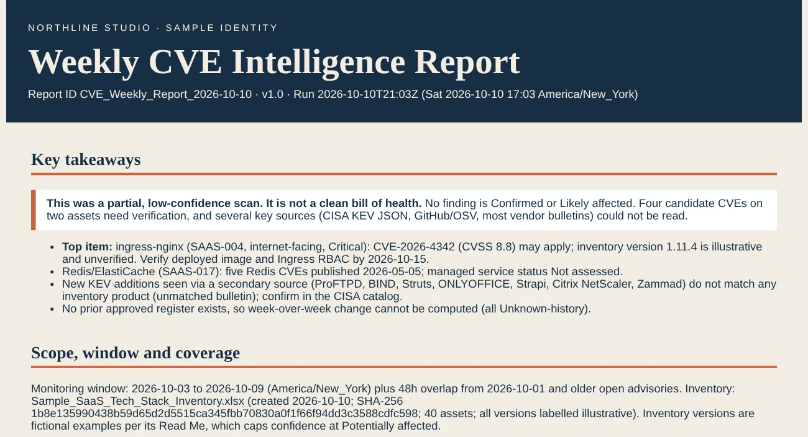

AI-03Ready to deploy
Weekly CVE Intelligence & Exposure Review
A weekly scheduled review that checks new and updated CVEs, known-exploited listings, exploit likelihood, and vendor and open-source advisories against the organization's technology inventory. Each run produces a branded executive report, a findings register, and a source-coverage log, with the original advisory cited beside every finding.
- Domain
- Vulnerability intelligence, exposure management
- Sources
- CISA KEV, NVD CVE 2.0, FIRST EPSS, GitHub Advisories, OSV, applicable vendor PSIRTs
- Delivered as
- Claude Project, weekly scheduled task, optional Python feed collector on GitHub Actions
Built to avoid false confidence: a vendor-name match is never reported as a confirmed finding, a missing result is never reported as safe, and a finding is never closed just because it dropped out of this week's feed.
How each run works
- Records the run time, the window (the previous 7 days plus a 48-hour overlap), the inventory version, and which sources answered
- Reviews new and modified records, including older CVEs newly added to the KEV catalog, and checks only the vendor bulletins that apply to the inventory
- Matches advisories to assets by SBOM package or CPE and version range first; product names and categories are research leads only
- Tracks each finding week over week as New, Continuing, Changed, Resolved (verified), or Unknown history
Every week it delivers
- An executive report in the company's brand, or a clearly labeled placeholder if no brand guide is supplied
- A findings register with one row per CVE and asset, including CVSS version, EPSS date, and KEV status
- A source-coverage manifest showing what was queried, when, and what failed
- A triage backlog listing the evidence needed, the owner, and the due date
Applicability ladder
Confirmed affectedExact version and configuration validated with direct evidence
Likely affectedStrong product and version evidence, one prerequisite unverified
Potentially affectedProduct present, version or configuration incomplete
Not affected (verified)Documented counter-evidence such as an out-of-range version
Not assessedNot enough inventory or source access to decide
Default response bands
| Band | When it applies | Target |
|---|---|---|
| P0 Emergency | Confirmed or likely affected, known exploited, with a reachable attack path | 72 hours |
| P1 High | Affected, high severity, significant exposure | 7 days |
| P2 Medium | Affected with less exposure | 30 days |
| P3 Routine | Low-impact exposure or hygiene | 90 days |
| Verification queue | Possible match with unknown version or configuration | 24 hours if exploited, else 5 business days |
Recommended defaults, replaced by each organization's approved SLAs.
Safeguards
- Advisories, web pages, and inventory text are treated as data, never instructions; it never runs supplied commands or follows credential links
- Inventory details are never sent to outside sites, and redacted inventories are recommended
- No scanning or intrusive testing without separate authorization
- When a source fails, the report says so and never gives a clean bill of health
- Verified with acceptance tests, including a missing inventory, same vendor but different product, unknown version, a source outage, and an open issue with no patch proof
First pilot run · October 10, 2026
Run against a synthetic 40-asset SaaS inventory with illustrative versions, using a sample brand guide.

- Read all 40 assets, recorded the inventory's hash, and applied the brand guide on its own
- Found four candidate findings on two assets and labeled each Potentially affected or Not assessed, because the inventory versions were examples
- When the KEV, GitHub, and OSV feeds failed to load, the report led with:
This was a partial, low-confidence scan. It is not a clean bill of health.
- Named an owner and a verification date for every open item, and logged every source as success, partial, failed, or not queried
Read the sample report
Pilot output on synthetic data. CVE details are as reported by the run and have not been independently verified.